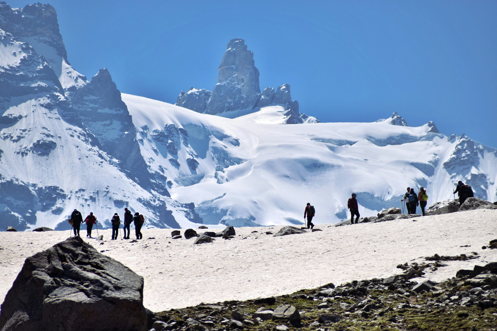

Trek
10 Days
Trek 46 km
Uttarakhand
Nestled high in the Himalayas of Uttarakhand, the Valley of Flowers is a breathtaking UNESCO World Heritage Site that unfolds like a living canvas of vibrant hues. This ethereal valley, spread over 87.5 square kilometers, is a sanctuary for nature lovers and adventure enthusiasts alike. It’s renowned for its incredible biodiversity, featuring a dazzling array of wildflowers that bloom from July to September, transforming the valley into a riot of colors.
The Valley of Flowers is not just a visual delight but also a botanical treasure trove. Over 500 species of wildflowers, including the rare Brahmakamal, Blue Poppy, and the elusive Himalayan Edelweiss, dot the landscape. The valley’s rich flora is complemented by its diverse fauna, with sightings of rare animals such as the Asiatic Black Bear, Himalayan Musk Deer, and the elusive Snow Leopard.
Embarking on the Valley of Flowers trek is like stepping into a dream world. The journey begins from the town of Joshimath, followed by a scenic drive to Govindghat. From there, the trek leads you through lush meadows, dense forests, and across crystal-clear rivers. The trail offers unparalleled views of snow-capped peaks and the mesmerizing Ganges, making every step a rewarding experience.
The Valley of Flowers is not only a haven for flora and fauna but also holds a deep cultural and spiritual significance. It is believed to have been inspired by the mythical realm of the Gods, where the beauty of the flowers is said to be a gift from the divine.
Whether you're an avid trekker, a nature photographer, or simply a seeker of tranquility, the Valley of Flowers promises an unforgettable experience. Its pristine beauty, coupled with the adventure of the trek, offers a unique opportunity to connect with nature in its most unspoiled form. Embark on this enchanting journey and let the Valley of Flowers captivate your senses and rejuvenate your spirit.
Region: Uttarakhand, India
Nearest City: Rishikesh or Haridwar
Floral Diversity: The Valley of Flowers is a UNESCO World Heritage Site known for its vibrant, colorful meadows filled with a diverse range of wildflowers. During the monsoon season, the valley transforms into a floral paradise with over 500 species of flowers, including orchids, poppies, and primulas.
Biodiversity: The region is home to diverse flora and fauna, including rare species like the Himalayan blue sheep and the snow leopard. The area is also rich in medicinal plants.
Scenic Beauty: The trek offers breathtaking views of the surrounding Himalayan peaks, including Nanda Devi, and lush green meadows interspersed with vibrant blooms. The contrast between the colorful flowers and the rugged terrain adds to the trek’s charm.
Moderate Difficulty:The trek is generally considered moderate, making it accessible to a wide range of trekkers. The paths are well-marked, and the trek usually takes about 6-7 days.
Cultural Experience: The trek provides an opportunity to experience the local culture and traditional lifestyles of the Garhwali and Bhotia communities living in the region.
Best Time to Visit: Season-July to September (monsoon season), when the valley is in full bloom.
Permits and Preparation:
Permits: Obtain permits from the Forest Department.
Preparation: Ensure you have appropriate trekking gear and clothing, and be
prepared for varying weather conditions.
This trek is celebrated for its spectacular natural beauty and is a dream destination for nature lovers and avid trekkers alike.
All entry charges as per the itinerary,
Water Sports charges (Parasailing, Jet Ski, Bumper Ride, Speed boat ride,
Banana Ride)
Certified tour leaders / First Aid Responder.
Train ticket from and to. (Depends on the train) Sleeper or 3AC Compartment or 2AC Compartment. The train ticket cost based on the boarding station like Coimbatore, Chennai or Bengaluru.
Note: This itinerary is a general guideline and may vary based on weather conditions, trekking pace, and other factors. Always check with your tour operator for the most accurate and updated details.